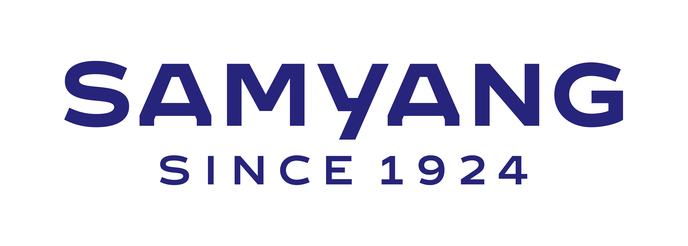

About me
I am interested in contributing to a future where AI supports reliable decision-making in complex and dynamic industrial environments.
I aim to achieve this by designing AI systems centered on defining and interpreting problems under complex conditions and variables.
My ultimate goal is to develop cognitive AI systems that can be practically applied to real-world industrial decision-making processes.
For more details about my background and work, you can download my CV below.
For more details about my background and work, you can download my CV below.
Experience
Research Developer, NEVIX
Smart Monitoring System (Prototype)
CV-based industrial monitoring & volume estimation
Jan. 2026 – Mar. 2026
Smart Monitoring System (Prototype)
CV-based industrial monitoring & volume estimation
Jan. 2026 – Mar. 2026

Intern, Samyang Corporation
Samyang Discovery Center, Bio-Convergence Research Institute
Industrial data structuring & ML analysis
Sep. 2025 – Dec. 2025
Samyang Discovery Center, Bio-Convergence Research Institute
Industrial data structuring & ML analysis
Sep. 2025 – Dec. 2025
Undergraduate Research Assistant
AI & Data Engineering Lab, Baekseok University
Advisors: Profs. Seokgu Lim & Hyunseob Lee
Jan. 2022 – Jun. 2024
AI & Data Engineering Lab, Baekseok University
Advisors: Profs. Seokgu Lim & Hyunseob Lee
Jan. 2022 – Jun. 2024
Publications
Sumi Song, Hyunseob Lee,"Analysis and Design for Improving Read Performance in NAND Flash Memory Storage Devices" Korea Information Processing Society (KIPS), May 2023
Honors & Awards
- Grand Prize, Startup Idea Competition (2023)
- Encouragement Award, Social Problem-Solving Hackathon (2022)
- Encouragement Award, Smart IT Competition (2021)
Projects
- Webcam-Based Real-Time Sign Language Recognition System (2025)
- YOLOv5-Based Real-Time Object Detection System (2024)
- EcoBank Big Data Competition (2023)
- Automated Stock Prediction and Trading System (2021)
Certifications
Unmanned Multicopter (3 Types) Certificate, Korea Transportation Safety Authority (Sep. 2022)